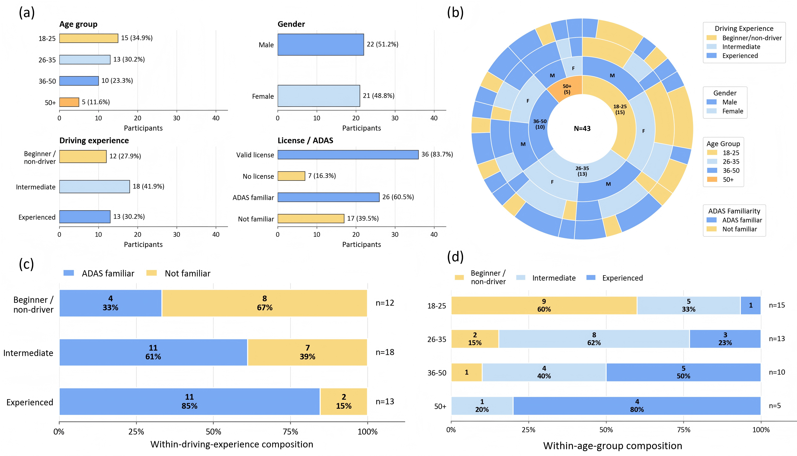
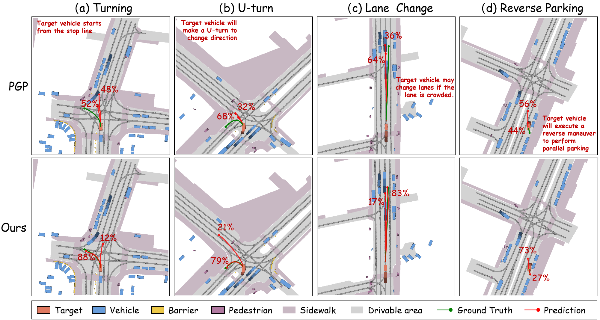
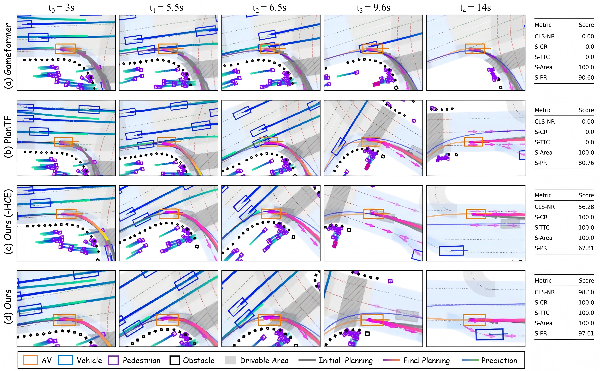
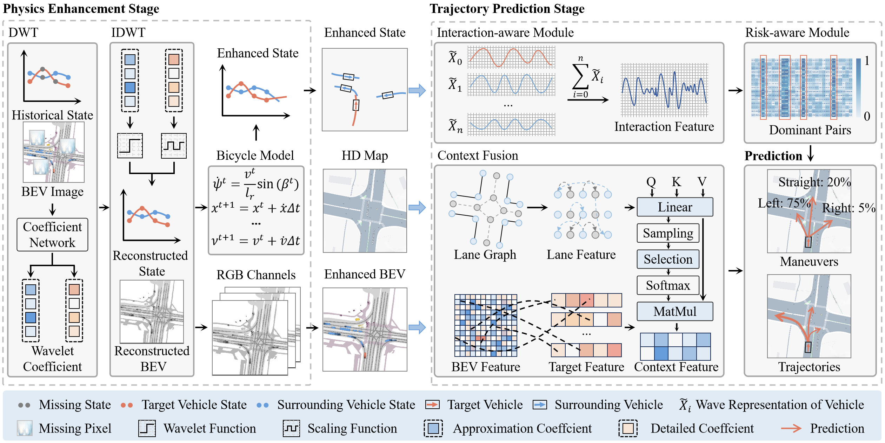

Haicheng Liao (廖海成)
Ph.D. in Computer Science
University of MacauState Key Laboratory of Internet of Things for Smart City
Short Bio
I received my Ph.D. in Computer Science from University of Macau (UM), supervised by Prof. Zhenning Li and Prof. Chengzhong Xu (IEEE Fellow, recipient of the Guanghua Engineering Science and Technology Prize). I am affiliated with the State Key Laboratory of Internet of Things for Smart City (SKL-IOTSC). I earned my B.E. from the University of Electronic Science and Technology of China (UESTC) in 2022.
Passionate about Intelligent Transportation Systems, I bring AI&ML techniques to Human-Like Autonomous Driving, broadly including four key research themes: (1) Trajectory Prediction & Planning, (2) Multimodal Grounding, (3) Accident Anticipation, (4) End-to-end Autonomous Driving.
I have published 30+ papers as the first/co-first author in prestigious journals such as Engineering, Artificial Intelligence (AIJ), Transportation Science, IEEE (T-PAMI, T-RO, T-ITS, T-AI, T-IV), COMMTR, Information Fusion, TR-Part C, and AAP, and at leading AI conferences like CVPR, ICCV, AAAI (Oral), ACM MM (Oral), ECCV, IJCAI, ECAI, and ICRA.
Over the years, we've mentored 10+ outstanding students, many of whom have advanced to top-tier institutions like Tsinghua University (THU), Peking University (PKU), Purdue University (PU), Zhejiang University (ZJU), Shanghai Jiao Tong University (SJTU), University of Science and Technology of China (USTC), and Tongji University (TJU).
I am actively seeking research collaborations and welcome ideas for joint projects. If you are interested in collaborating or sharing thoughts, please feel free to reach out via Email.
News
All publications →Our paper Adaptive LLM reasoning for AD has been accepted by Artificial Intelligence (AIJ).
Our paper End-to-End Accident Anticipation has been accepted by Engineering (CAE Flag Journal).
Our paper SWIFT has been accepted by IEEE TPAMI.
Our paper SFM has been accepted by ECCV 2026.
Our paper Addressing Corner Cases has been published in Transportation Research Part C (TR-C).
Two papers have been accepted by CVPR 2026: Think Before You Drive and E3AD.
Our paper ROAR has been published in Accident Analysis & Prevention.
Two papers have been accepted by AAAI 2026: Differentiable Semantic Meta-Learning and Predict and Resist.
Our paper SafeCast has been accepted by AI Open.
Our paper SA-TP² has been accepted by IEEE Transactions on Robotics (TRO).
Our paper World Model-Based Scene Generation has been accepted by Communications Engineering.
Our paper Eyes on the Road, Mind Beyond Vision has been accepted by ACM MM 2025.
Our paper AMD has been accepted by ICCV 2025.
Our paper Beyond Patterns has been accepted by IJCAI 2025.
Our paper Domain-Enhanced Dual-Branch Model has been accepted by Communications in Transportation Research.
Our paper CoT-Drive has been accepted by IEEE Transactions on Artificial Intelligence (TAI).
Our paper Human-like trajectory prediction has been accepted by Transportation Science.
Our paper WAKE has been accepted by IEEE TPAMI.
Our paper DRIVE appeared at ICRA 2025.
Our paper Learning New Concepts, Remembering the Old appeared at ACM MM 2025.
Two papers have been published in IEEE TITS: Chain-of-Thought Guided Accident Anticipation and Minds on the Move.
Our paper Improving Visual Grounding received a Best Paper Award at CICTP 2025.
Our paper NEST appeared at AAAI 2025 as an Oral Presentation.
Two papers have been published in Information Fusion: DEMO and LATTE.
Selected Publications

End-to-End Traffic Accident Anticipation and Localization for Autonomous Driving
Engineering, 2026 [CAE Flag Journal]

Towards Human-Like Trajectory Prediction: A Behavior-Centric Approach
Transportation Science (TS), 2025 [Most Prestigious Journal in Transportation]

SA‑TP2: A Safety-Aware Trajectory Prediction and Planning Model for Autonomous Driving
IEEE Transactions on Robotics (IEEE TRO), 2025

Think Before You Drive: World Model-Inspired Multimodal Grounding for Autonomous Vehicles
IEEE/CVF Conference on Computer Vision and Pattern Recognition (CVPR), 2026

Adaptive Large Language Model Reasoning for Autonomous Driving Decision-Making
Artificial Intelligence (AIJ), 2026

Transportation Research Part C: Emerging Technologies (TR-C), 2025

IEEE Transactions on Pattern Analysis and Machine Intelligence (TPAMI), 2025